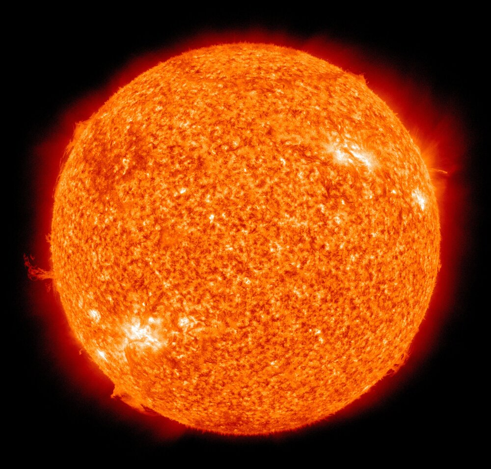

Sun, Moon and More
Let us explore a few more details about the Solar System!
Sun
At the center of the Solar System is the Sun. He is a star, like the billions of other stars in the sky. The other stars look small because they are so far away from us. The Sun is important because it is what allows life on Earth. It provides light, heat, and energy. Without the sun, no life would exist on our planet. The diameter of the Sun is 1,392 million kilometers. It is mainly composed of hydrogen and helium, as well as iron, nickel, oxygen, silicon, carbon, nitrogen, sulfur, etc. Its temperature varies, reaching up to 5,505 degrees Celsius at the surface and 16 million degrees Celsius at the core. Fun fact: a trip from Earth to the Sun, in a spacecraft, would take about 124 days.
Moon
The Moon is the only natural satellite of the planet Earth. This celestial body has a radius of approximately 1740 km, which makes it the fifth-largest moon in the entire Solar System. The Moon's mass is 7.35 x 1019 tons, a value that corresponds to only 1.23% of the Earth's mass. It is positioned at 384,400 km from our planet, an interval at least 18 times greater than when it formed, 4.5 billion years ago. The distancing process has not ceased, and each year it increases by 3.78 centimeters. According to NASA, the satellite has a very thin and fragile atmospheric layer called the exosphere, which does not provide any type of protection. As a result, a series of meteorite impact craters can be observed on its surface, in addition to debris and layers and layers of rocky debris (regoliths) and dust, developed throughout its existence as a result of the impacts. There are areas of high relief on the surface of the Moon resulting from the filling of craters by lava flows, and the last ones occurred about 1.2 billion years ago. These elevations are called Marias. Regarding temperatures, the variation is very large between the hemisphere that is currently receiving illumination and its opposite. The first, which receives sunlight, has a temperature of up to 127 ° degrees Celsius, while on the face not illuminated by the Sun, the measurement is -173 ° degrees Celsius. The orbital movement that the Moon performs around the Earth produces certain phenomena perceived both in the elements present on the Earth's surface and in those visible in the sky, at specific periods. One of these phenomena occurs mainly in the oceans and is called tides. Tides consist of fluctuations in seawater level caused by the gravitational force of the Moon. Although it acts over the entire land mass, the effect is best seen in the oceans. This oscillation also produces currents used to generate electricity; a process is known as tidal energy. The tides and the movement of sea currents are still important for the maintenance of climates on planet Earth.
Pluto
Discovered in 1930 by the American astronomer Clyde Tombaugh, Pluto is in the region called the Kuiper Belt, which is home to millions of icy celestial bodies, with distances from the Sun ranging from 4.5 billion to 7.5 billion kilometers. This distance to the Sun causes Pluto to record very low temperatures, hovering around -200° degrees Celsius. For decades, Pluto was considered a planet in the solar system. However, in August 2006, the International Astronomical Union (IAU) classified this celestial body as one of three dwarf planets: Ceres, Eris, and Pluto. This decision was motivated by Pluto's characteristics, in particular its shape and size. The distance from Earth to Pluto is very large, a fact that makes observations and sending space probes that can provide more accurate images difficult. Among the few characteristics obtained from this dwarf planet are the mass (equivalent to 0.24% of the Earth's mass), the internal composition (ice and rocks), the atmosphere (nitrogen, methane, and carbon monoxide), and the diameter: 2,306 kilometers. Another very important piece of information refers to the rotation (displacement around its axis) and translation (displacement around the Sun) movements. The first, responsible for the alternation of days, is carried out in a time equivalent to 6.5 days on Earth. The translation, responsible for the alternation of years, is completed in a time equivalent to 248 Earth years, as Pluto's orbit is very extensive.

Asteroid
Asteroids are rocky bodies of metallic structure that orbit around the sun like the planets but have a tiny mass compared to them. Their diameter can reach hundreds of kilometers, but it can also be a few meters. Have a defined form, presenting the most diverse appearances. Two theories point to its emergence and formation. The first–more accepted by the scientific community–states that asteroids were formed from the explosion that gave rise to our solar system and that they did not merge with any mass of any planet. The second states that they were formed from the remains and debris of planets or part of them, resulting from the collision between two celestial bodies. Asteroids were discovered after Johann Titus and Johann Bode determined the mathematical possibility of a planet orbiting the sun between Mars and Jupiter. In 1801, Giuseppe Piazzi discovered a body in this region, which was given the name Ceres. However, their mass was smaller, and their shapes were quite different from ordinary planets. Later, other similar smaller bodies were discovered in the region close to Ceres and they were given the name of asteroids.